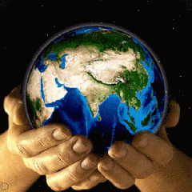

Dia Internacional de la Tierra
CUIDEMOS AL PLANETA
El Día de la Tierra es un día celebrado en muchos países el 11 de abril y en algunos otros el 22 de abril.
El establecimiento del Día de la Tierra tuvo lugar el 22 de abril del año 1970 en Estados Unidos, pero con
el tiempo esta celebración se volvió cada vez más internacional y actualmente se festeja a nivel global con
diverso tipo de ceremonias, actos y eventos. Es un día en el que la humanidad se une a
reflexionar sobre el lugar en el que vive y a pensar qué se puede hacer para evitar que la Tierra se siga destruyendo.
 .
Se puede decir que desde el establecimiento del Día de la Tierra en 1970 el activismo ecológico comenzó a ganar más y más espacio en los diferentes espacios públicos. Hoy en día, la reflexión sobre el cuidado del medio ambiente generada por el acto impacto que las actividades humanas han tenido sobre el mismo es central no sólo en términos del público general si no también en las agendas de los grandes políticos. El Día de la Tierra se organiza con mucha anterioridad y actualmente posee una bandera y una simbología específica que sirven para reconocer uno de los días más importantes para el mundo entero.- El Día de la Tierra es un día especialmente seleccionado en el año (22 de abril) para celebrar la importancia de nuestro planeta Tierra y para dar a conocer información y datos sobre su cuidado y preservación. El establecimiento del Día de la Tierra tuvo lugar el 22 de abril del año 1970 en Estados Unidos, pero con el tiempo esta celebración se volvió cada vez más internacional y actualmente se festeja a nivel global con diverso tipo de ceremonias, actos y eventos. Es un día en el que la humanidad se une a reflexionar sobre el lugar en el que vive y a pensar qué se puede hacer para evitar que la Tierra se siga destruyendo.
Se puede decir que desde el establecimiento del Día de la Tierra en 1970 el activismo ecológico comenzó a ganar más y más espacio en los diferentes espacios públicos. Hoy en día, la reflexión sobre el cuidado del medio ambiente generada por el acto impacto que las actividades humanas han tenido sobre el mismo es central no sólo en términos del público general si no también en las agendas de los grandes políticos. El Día de la Tierra se organiza con mucha anterioridad y actualmente posee una bandera y una simbología específica que sirven para reconocer uno de los días más importantes para el mundo entero.
El Día de la Tierra no es sin embargo un día en el que se realizan actos conmemorativos y simbólicos simplemente. Por el contrario, es un día en el cual se insta a todos lo ciudadanos y, especialmente, a los diferentes gobiernos, a tomar actitudes más ecológicas y a preservar el medio que nos rodea. De todas maneras, las agrupaciones ecológicas trabajan todo el año para lograr que los políticos y las personalidades más influyentes del mundo aseguren cambios positivos en el medio ambiente. La selección de un día particular para celebrar tal situación tiene que ver con la necesidad de hacer pública la reflexión y el debate específicos sobre el futuro de nuestro planeta.
- If you modify this design it still should contain copyright because it is based on our work.
- You may copy, distribute, modify, etc. this template as long as link to our website remains untouched.
For support visit http://www.metamorphozis.com/contact/contact.php
2021
PNUMA
De acuerdo con PNUMA (Programa de las Naciones Unidas para el Medio Ambiente), una nueva enfermedad infecciosa emerge en los humanos cada 4 meses. De estas enfermedades, el 75% provienen de animales. Esto muestra las estrechas relaciones entre la salud humana, animal y ambiental. El impacto visible y positivo del virus, ya sea a través de la mejora de la calidad del aire o la reducción de las emisiones de gases de efecto invernadero, no es más que temporal, ya que se debe a la trágica desaceleración económica y la angustia humana. Recordemos más que nunca en este Día Internacional de la Madre Tierra que necesitamos un cambio hacia una economía más sostenible que funcione tanto para las personas como para el planeta. Promovamos la armonía con la naturaleza y la Tierra.

CUIDA DONDE VIVES
La ONU adopta dicha celebración para reafirmar la importancia de la flora y fauna mundial. Está centrada en la conservación de la naturaleza, así como en la reiteración de su valor social y contribución al medio ambiente y que ninguna especie sea explotada al punto del peligro de extinción. La celebración del Día de la Tierra es más global, ya que su preocupación responde a los intereses del planeta..
Cuando la Madre Tierra nos manda un mensaje La Madre Tierra claramente nos pide que actuemos. La naturaleza sufre. Los incendios en Australia], los mayores registros de calor terrestre y la peor invasión de langostas en Kenia... Ahora nos enfrentamos a COVID -19, una pandemia sanitaria mundial con una fuerte relación con la salud de nuestro ecosistema. El cambio climático, los cambios provocados por el hombre en la naturaleza, así como los crímenes que perturban la biodiversidad, como la deforestación, el cambio de uso del suelo, la producción agrícola y ganadera intensiva o el creciente comercio ilegal de vida silvestre, pueden aumentar el contacto y la transmisión de enfermedades infecciosas de animales a humanos (enfermedades zoonóticas)....
Realiza estas acciones para cuidarla
Calendario
GRUPO 801
-
INGENIERO
-
TESJO